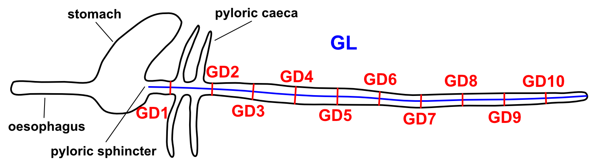
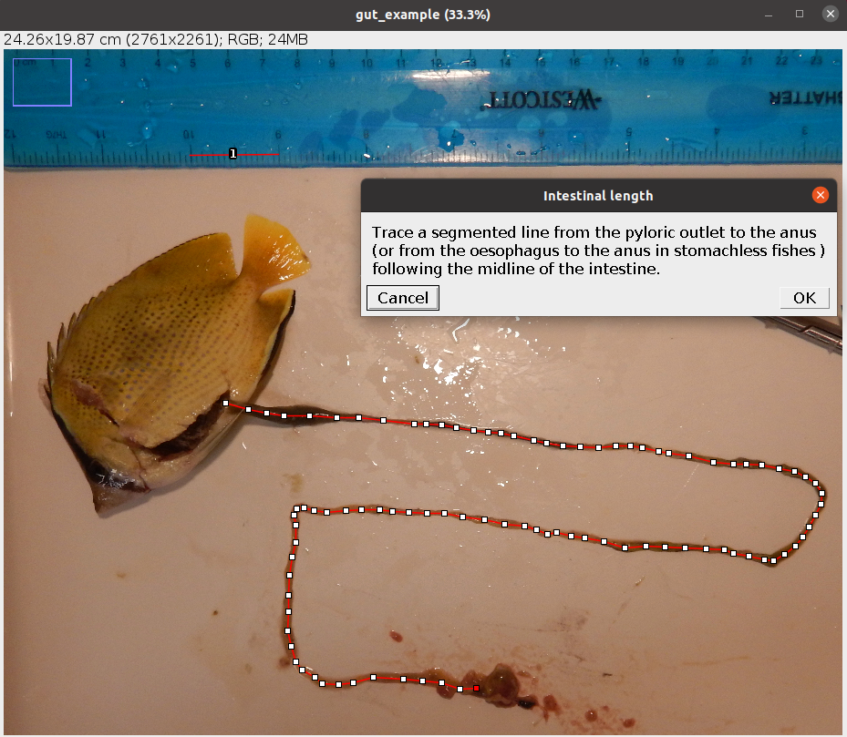
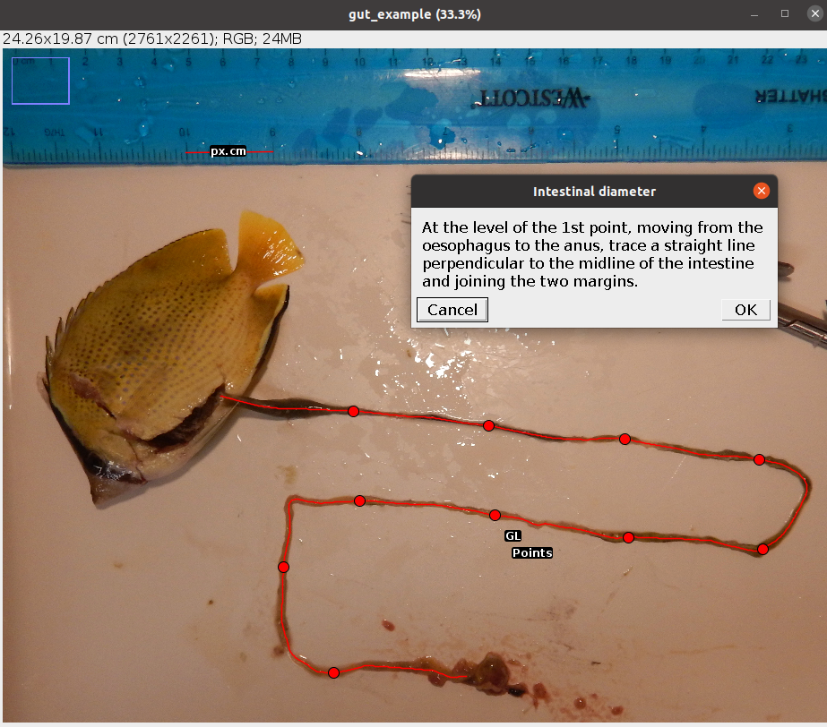
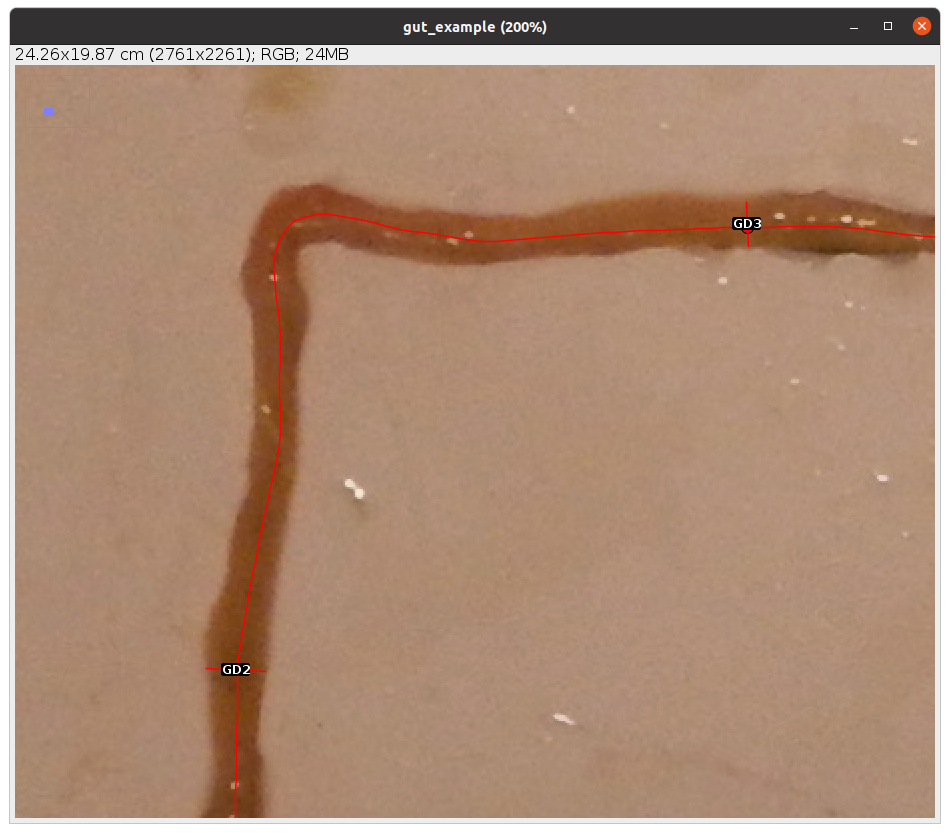

7 Gut Traits
The Gut Traits analysis allows to measure three intestinal traits related to fish diet (Table 7.1).
| Code | Trait | Description | Reference |
|---|---|---|---|
| GL | Gut length | Length of the intestine from the pyloric outlet to the anus in fishes with a stomach, or from the oesophagus to the anus in stomachless fishes | Ghilardi et al. (2021) |
| GD | Gut diameter | External diameter of the intestine (average of 10 measurements: GD1-GD10) | Ghilardi et al. (2021) |
| GS | Gut surface area | External surface area of the intestine calculated as GL x 2\(\pi\)(GD/2) | Ghilardi et al. (2021) |

7.1 Analysis
Once the steps described in Section 2.2 are completed the screen will be populated with a number of windows:
- the ImageJ/Fiji main window
- the MorFishJ GUI
- a fish image (this is a duplicate of the raw image to prevent any modification)
- the ROI manager
- the
Set scaledialog
This analysis has a few steps that require the user input:
Set the scale for the image as described in Chapter 3.
Trace a segmented line following the midline of the intestine as shown below.

After clicking OK 10 points appear equally distributed along this line.

At the level of the point closest to the oesophagus, trace a straight line perpendicular to the midline traced in the previous step and joining the two margins of the intestine.
Repeat step 3 for each point in order moving towards the anus. See example below.

The analysis of the image is completed. In case of single image analysis a window named Traits containing all the results appears. This can be saved by clicking on File -> Save As.... All ROIs in the ROI manager can also be saved as a zip file by clicking on More >>> -> Save.... In case of multiple image analysis a new row will be added to the results file and the ROIs are saved in their directory. The current image is closed and the next is opened. Repeat steps 1-4 for all images.
7.2 Results
The results file/table contains one row for each image and 16 columns. The first column, image_id, is the name of the image without extension. The second column, px.cm, is the scale of the image in pixels/cm. The columns 3-5 are the traits described in Table 7.1 in cm (cm2 for GS). The columns 6-15 are the 10 raw measurements of the diameter (GD1-GD10) in order from the oesophagous to the anus. The last column, time, is the time spent to analyse the image (steps 1-4) in seconds.